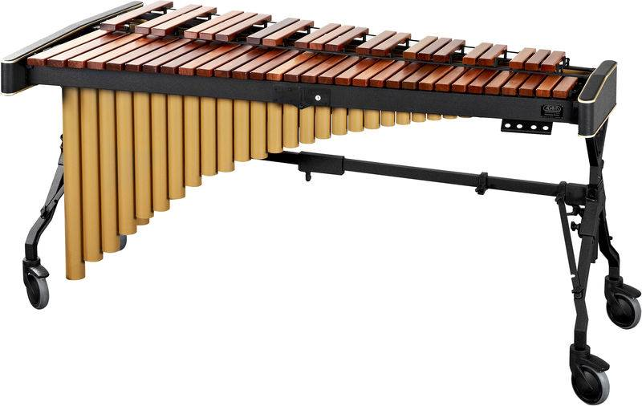

Our snares play with a traditional grip here at ECB.
You could call them quints but that just sounds weird.
Our bass line has fluctuated in size throughout the years. We have marched up to 8 in the past but recently marched only 5 in the 2019 season.
What on Earth is a flub? A flub is a single marching tenor drum the size of a snare drum. This section usually consisting of 5 members is for those who have good hands but aren’t quite ready for a snare or tenor just yet. This is a great section to get the marching percussion experience while you’re still building up your chops.
Sadly in our 2019 videos you will not see any cymbals on the floor simply because we did not have the members to fill those spots. But as expected if we have people who want to march cymbals we will have a place for them.
Our most recent addition to our group is a full front ensemble. Marimbas, vibes, synth, auxiliary you name it.